RxJava2中的Single
本文不介绍RxJava是什么，那么本章主要讲讲《平行世界》中使用过的Single类【Reference】。首先Single表示一个、或者说单一、又或者说是“单源”，数据被它拿到时表示这个过程的数据内容就是一个单一源——需要注意的是这里的“单源”不等同于“单个”，也就是说这个“单源”本身可以是一个集合，或者一个数组，或者其他。其次看看下边的代码段：
Single.just(T value);上边的just(T value)签名是一个泛型参数，可以把value当做入参，那么有了这样的输入过后，如何处理它对应的输出呢？既然这里是异步处理，那么自然而然就会有一个类似于“异步回调”的概念——理所当然，所以这里拥有了subscribe的概念，也就是说上边的代码只会返回一个Single<T>的对象，但这个对象还没进入“执行”的阶段，从代码层面上看，目前我们处理的只是“编连”，要执行了下边的代码后，整个单源才会“发射”（对发射概念不了解的，可看看Rxjava的基础）。
Single.just(T value).subscribe();那么看看下边这段代码，
Vertx.rxClusteredVertx(options)
.doOnSuccess(consumer::accept)
.doOnError(error -> {
if (null != error) {
error.printStackTrace();
}
}).subscribe();上边的doOnSuccess和doOnError实际上和前边提到的just有异曲同工之妙，但最终还是调用了subscribe方法来触发整个逻辑，而这里的doOn前缀方法就是这个发射后的回调，即语义为：成功则执行consumer::accept函数，而失败就打印错误信息。just方法本身在Rxjava中确实使用了另外一个线程来处理，但这个过程实际上是同步的，并没有触发异步操作，而just只会在当前这个线程中执行。接下来根据官方文档来解释一下Single的用法，任何一个“单源”，都可以调用对应的API进行“操作编连”——之所以叫做编连就是因为在写这部分代码时，本身未触发执行，要等到真正的“发射”动作才会执行代码。先看看官方对Single的总结：
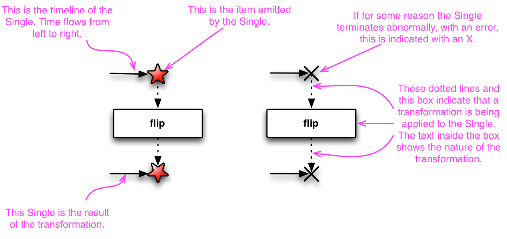1. compose
这个操作符表示“后续”，它允许你创建一个自定义的操作符，它实际上完成了一个从Single<T>到Single<U>的转换，可以称之为一个Monad操作（Monad操作可参考最初函数式编程部分），这个操作并不复杂，而且使用场景有限，可以看看下边的代码：
package io.vertx.rx.x;
import io.reactivex.Single;
public class RxCompose {
public static void main(final String[] args) {
Single.just(10)
.compose(item -> item.map(integer -> integer + 2.0)) // item -> Single<Integer>
.compose(item -> item.map(doubleValue -> doubleValue * 2)) // item -> Single<Double>
.subscribe(item -> {
System.out.println(item);
System.out.println("Successfully to passed !");
});
}
}运行代码会有以下输出：
24.0
Successfully to passed !那么这里来看看究竟上边代码发生了什么事，上边代码可以不使用lambda的方式来写，就改写成了下边这种格式（您会彻底爱上lambda的写法）：
Single.just(10)
.compose(new SingleTransformer<Integer, Double>() {
@Override
public SingleSource<Double> apply(final Single<Integer> single) {
return single.map(integer -> integer + 0.2);
}
})
.compose(new SingleTransformer<Double, Double>() {
@Override
public SingleSource<Double> apply(final Single<Double> single) {
return single.map(doubleValue -> doubleValue * 2);
}
})
.subscribe(item -> {
System.out.println(item);
System.out.println("Successfully to passed !");
});需要注意的是，Reference那篇文章中使用的是Rxjava，而本书中所有的Rx都表示Rxjava2，二者除了操作层面，在Api级别还是有很大的区别的，这一点系统读者明白，当然我们也推荐使用Lambda的方式写，代码要简洁很多。
2. concat/concatWith
这个Api将多个“单源”组合成一个Observable发射源，其代码逻辑如下（后边就不翻译成Java写法了，只用lambda写法：
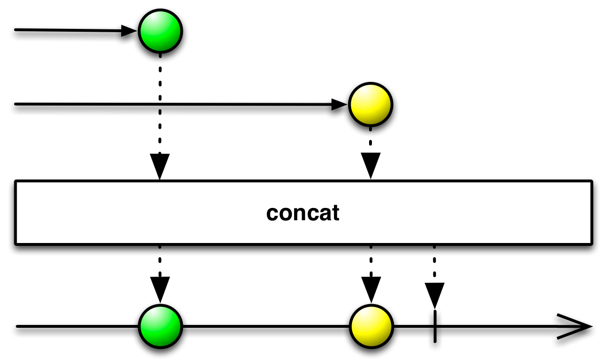
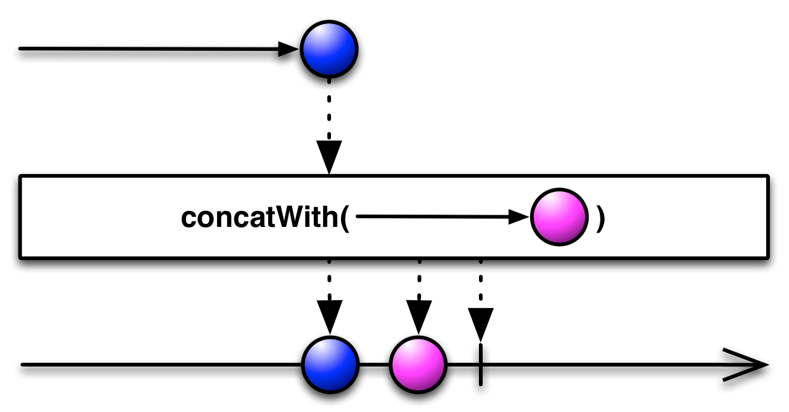
上述代码例子如：
package io.vertx.rx.x;
import io.reactivex.Single;
public class RxConcat {
public static void main(final String[] args) {
Single.concat(Single.just(10), Single.just(12))
.compose(item -> item.map(integer -> integer + 2.0)) // item -> Flowable<Integer>
.compose(item -> item.map(doubleValue -> doubleValue * 2))
.subscribe(item -> {
System.out.println(item);
System.out.println("Successfully to passed !");
});
}
}上边代码输出为：
24.0
Successfully to passed !
28.0
Successfully to passed !这种Api的优势在于所有在构造时的Single都会顺序执行，并且依次执行，而中间有任何一个节点出了问题调用了onError那么这个流程就会中断，比较适合于带有顺序的基本操作，而且细心的读者会发现每个“单源”之间互不影响，各做各。这个例子中的compose方法有点多余，因为这里的compose中的操作有可能是针对每一个“单源”，而这种做法实际上有些鸡肋，因为有可能这个Single单源已经完成了自己内部的操作了，所以最好的做法是对“完整单源（不包含后续像compose这种操作的）”进行连接依次执行。
3. create
其实create的API应该属于Rxjava中的标准创建类型的API，前边我们使用了Single.just方法来创建源，实际上二者之间有一个“子母”关系，按照引用中的文章所言：您可以将just当做一种很特殊的create方法，看看那篇文章【Reference】的原文：
值得注意的是之前我们使用的just()是一种特殊的create()，它不能指定Schedulers。只能在当前线程中运行，而create()可以指定Schedulers实现异步处理。且just()不管是否被subscribe()订阅均会被调用，而create()如果不被订阅是不会被调用的。所以我们通常可以用just()传递简单参数，而用create()处理复杂异步逻辑。
这里涉及到一个概念是关于RxJava中scheduler的，实际上能指定scheduler的操作可开启另外一个线程异步执行，而just之所以特殊就是它不会被异步调用，create的流程和用法如下：
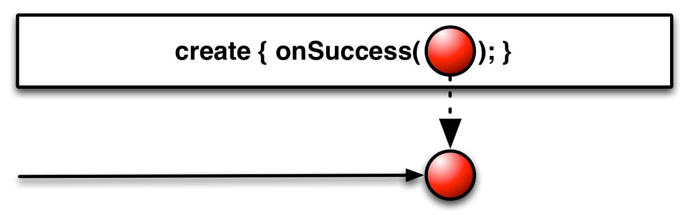
package io.vertx.rx.x;
import io.reactivex.Single;
import io.reactivex.SingleEmitter;
import io.reactivex.SingleOnSubscribe;
public class RxCreate {
public static void main(final String[] args) {
Single.create(new SingleOnSubscribe<Integer>() {
@Override
public void subscribe(final SingleEmitter<Integer> singleEmitter)
throws Exception {
singleEmitter.onSuccess(120);
}
});
Single.create(item -> item.onSuccess(120)); // item -> SingleEmitter
}
}上边是完整代码和使用Lambda表达式的代码，这里的SingleEmitter除了onSuccess的方法以外还有onError的方法，用于处理异常流，这里就不重复，它的返回值是一个Single<Integer>，和前边写的一样，您就可以使用这个“单源”的引用了。
4. delay
该操作主要是延时发射Observable里面的事件，这个方法很好理解——而根据Rxjava2中的内容，这里可设置两种执行线程：
- 直接是当前线程延迟发射
- 将延迟发射放到一个新的线程中
Schedulers.io()，然后通知主线程
这里不列举延迟的代码，看看官方对这个方法的图解即可：
不使用Scheduler：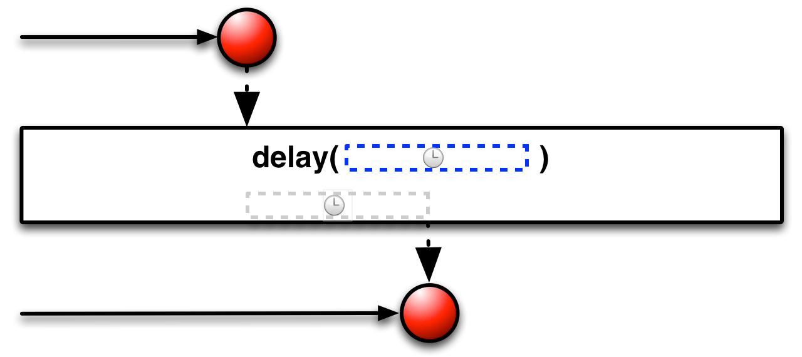使用Scheduler：
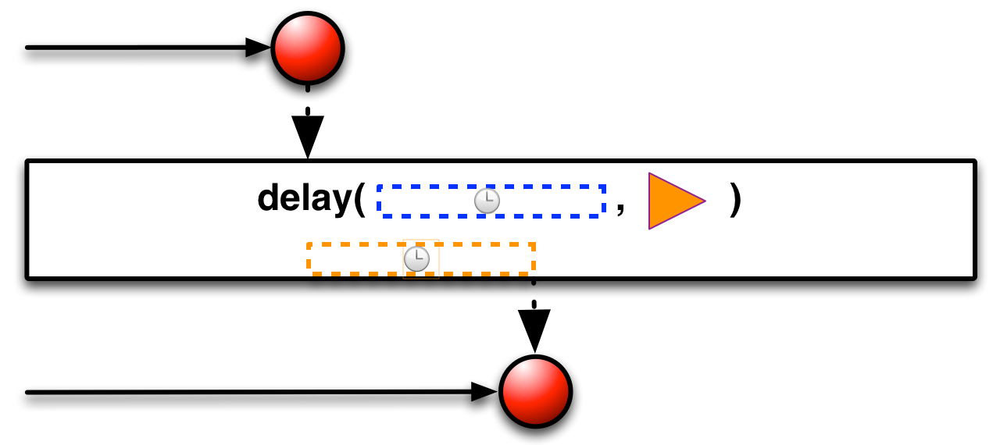5. doXX
这里不是介绍的doOnSuccess或者doOnError，而使用了doXX系列方法，器原因在于RxJava2中其实有以下系列API：
// 成功时的回调
public final Single<T> doOnSuccess(Consumer<? super T> onSuccess);
// 失败时的回调
public final Single<T> doOnError(Consumer<? super Throwable> onError);
// 在doOnSuccess之后，成功之后执行
public final Single<T> doAfterSuccess(Consumer<? super T> onAfterSuccess);
// 在程序终止后执行
public final Single<T> doAfterTerminate(Action onAfterTerminate);
// 在终止之前，最终会执行
public final Single<T> doFinally(Action onFinally);
// 在Subscribe方法触发时候执行
public final Single<T> doOnSubscribe(Consumer<? super Disposable> onSubscribe);
// Event触发时
public final Single<T> doOnEvent(BiConsumer<? super T, ? super Throwable> onEvent);
// 在dispose时触发
public final Single<T> doOnDispose(Action onDispose);官方比较关注的是doOnSuccess方法和doOnError方法，这两个方法的流程图如下：
接下来通过一个实际的例子来看看不同方法的触发时间：
package io.vertx.rx.x;
import io.reactivex.Single;
public class RxDo {
public static void main(final String[] args) {
Single.just("Lang")
.doOnSuccess(item -> output("doOnSuccess", item))
.doOnError(ex -> output("doOnError", ex.getMessage()))
.doAfterSuccess(item -> output("doAfterSuccess", item))
.doAfterTerminate(() -> output("doAfterTerminate", " ( None ) "))
.doFinally(() -> output("doFinally", " ( None ) "))
.doOnDispose(() -> output("doOnDispose", " ( None ) "))
.doOnSubscribe(item -> output("doOnSubscribe", item.toString()))
.doOnEvent((item, ex) -> output("doOnEvent", item + ":" +
((null == ex) ? "" : ex.getMessage())))
.subscribe();
}
private static void output(final String prefix, final String item) {
System.out.println(prefix + " : " + item);
}
}这段代码的输出如下：
doOnSubscribe : io.vertx.rx.x.RxDo$$Lambda$6/195600860@33833882
doOnSuccess : Lang
doOnEvent : Lang:
doFinally : ( None )
doAfterTerminate : ( None )
doAfterSuccess : Lang这样读者就了解这一系列的API的顺序了。
6.error
这个方法很容易理解，它会直接在整个Reactive的数据流中生成一个错误信息，中断整个数据流的处理过程。
和前边的do系列方法有点区别是error方法是静态方法，可直接通过Single类调用，从含义上讲它用于定义一个”异常源“。
Single.error(new RuntimeException());7.flatMap/flatMapObservable
先看其数据流程图：
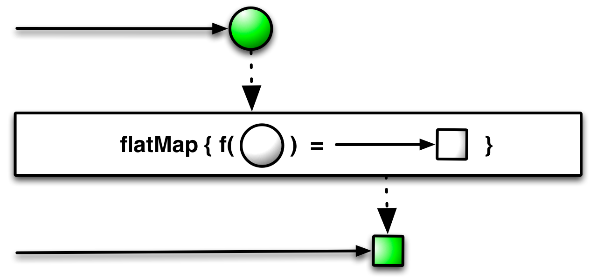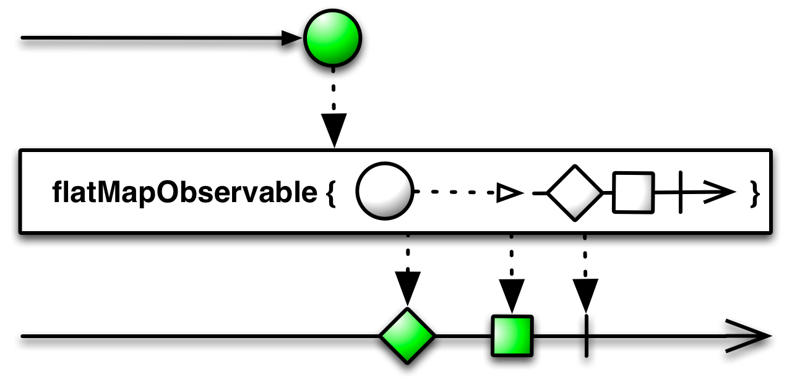
package io.vertx.rx.x;
import io.reactivex.Single;
import java.util.HashMap;
import java.util.Map;
public class RxMap {
public static void main(final String[] args) {
final Map<String, String> dataMap = new HashMap<String, String>() {
{
this.put("Key1", "Data1");
this.put("Key2", "Data2");
}
};
Single.just(dataMap).flatMap(item -> {
final String value = item.get("Key1") + item.get("Key2");
return Single.just(value);
}).subscribe(System.out::println);
}
}从上边的代码可以知道flatMap的本意不是为了Single这种单源操作的，而这里写成一个单源的目的是本章只是讲了Single，当然由于官方教程将Single中存在的API全部列举在了引用链接中，所以这里我们顺带讲一下这种单源模式下的操作。可以这样理解flatMap这种操作的主要目的就是将一个集合单源计算后生成另外一个新的单源，当然对Single而言，你也可以什么都不做，那么这样和不变就没什么区别了——关于这部分内容等到以后处理复杂数据结构时再回过头来操作。
上边代码输出为：
Data1Data2本书不是主要讲解Rxjava2，而突然之间爬到官方教程对Single这种写了这么多文档，连图都是一堆一堆，所以没有办法才在这个支线中将这些内容讲解，后边部分我不会去一一验证它以及讨论它的用法，这样会让支线过于枯燥，所以就仅将官方教程中阐述的数据流图呈现出来，让读者自己去体会。
8. from
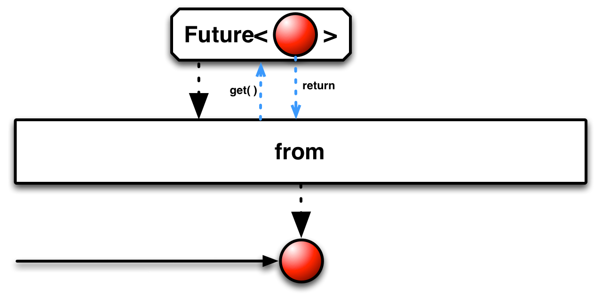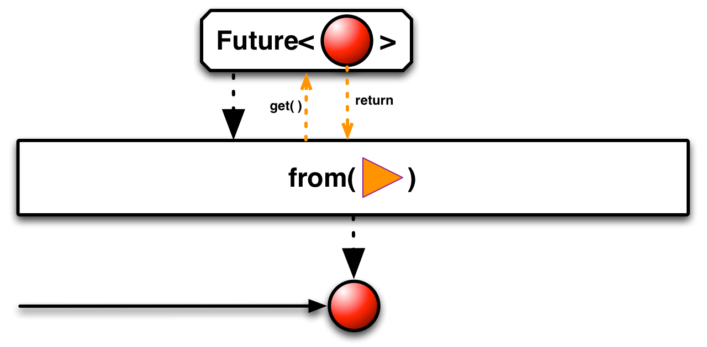9. just
千呼万唤使出来，这个方法我们一直在用，而现在才看到它的数据流，可以说是一种忧伤。
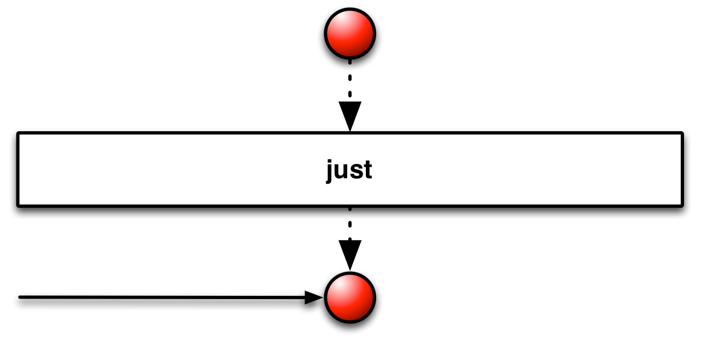10. map
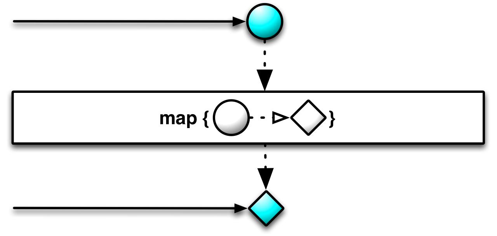11. merge/mergeWith
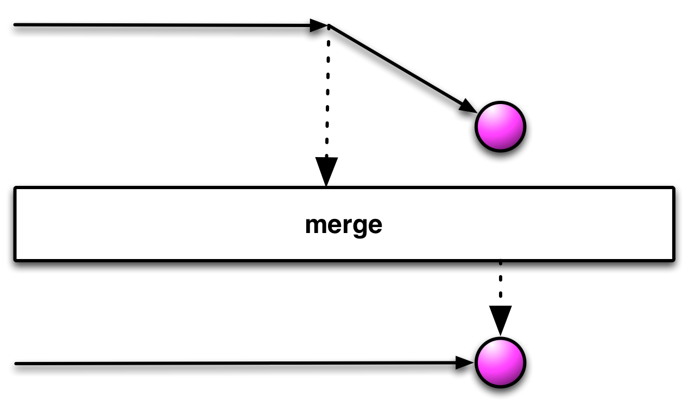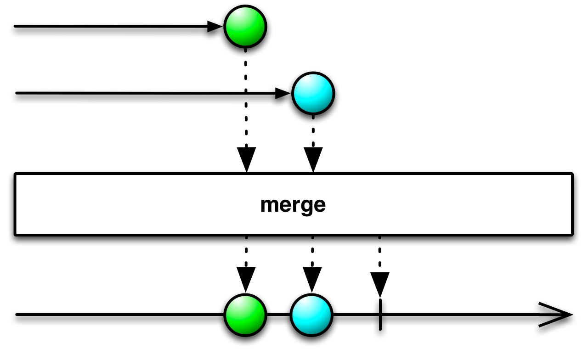12. observeOn/subscribeOn
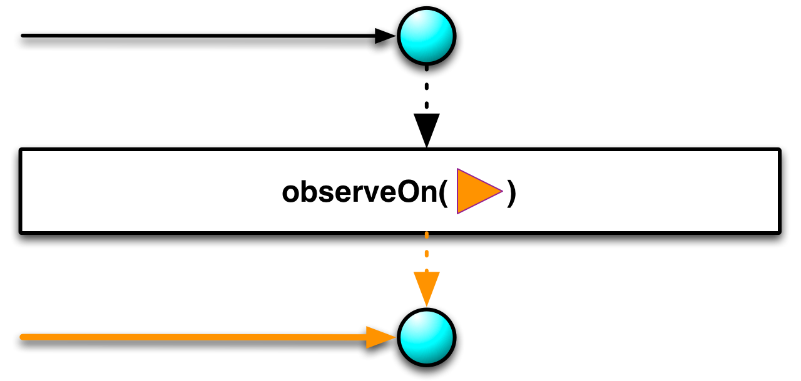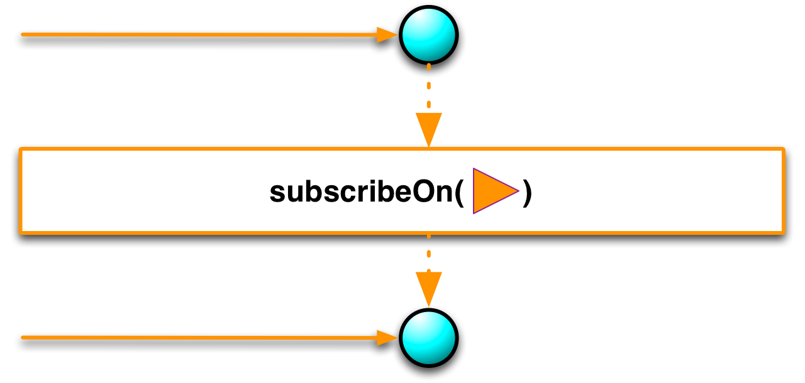13. onErrorReturn
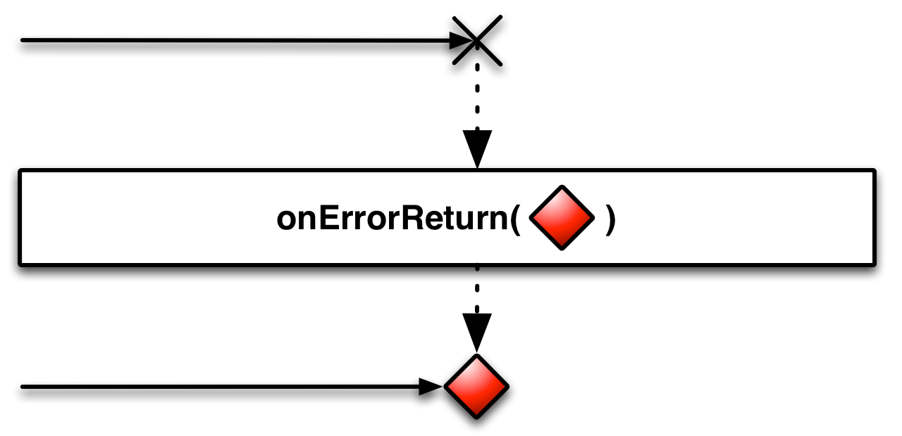14. toObservable
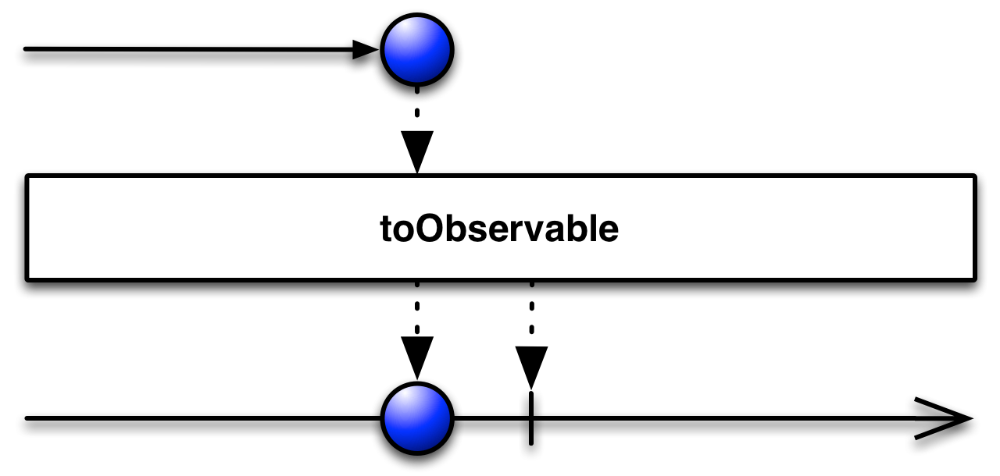15. zip/zipWith
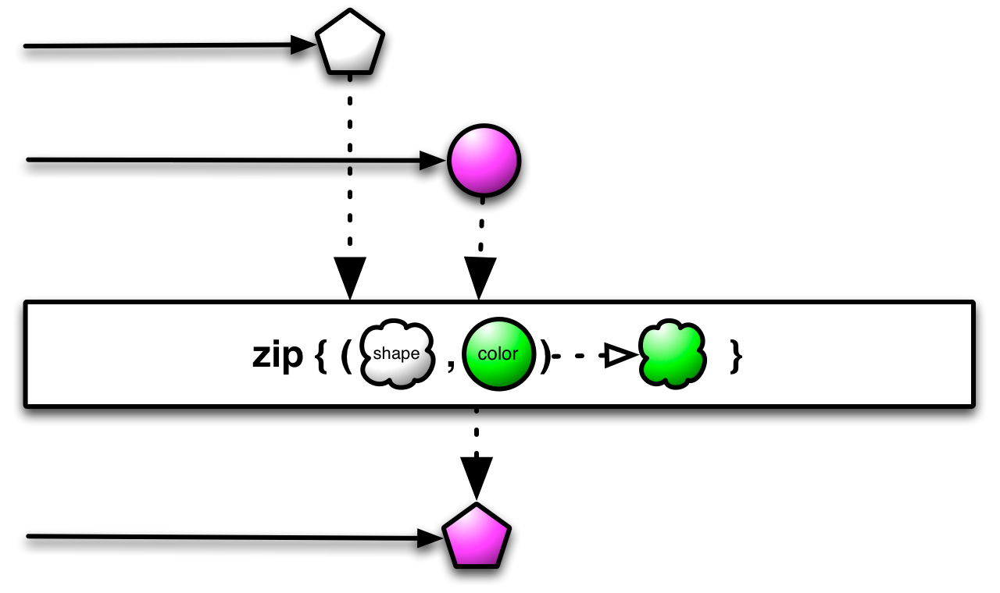16. timeout
如果说没有彩蛋，或许剧本就这样平平无奇过去了，这里之所以将timeout方法放到最后来讲，是因为它的模式相对多一点，不同的模式可能引起的数据流不一样。
直接在主线程中处理
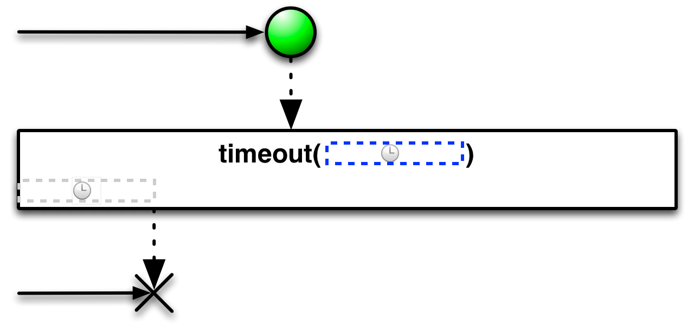Scheduler子线程中处理
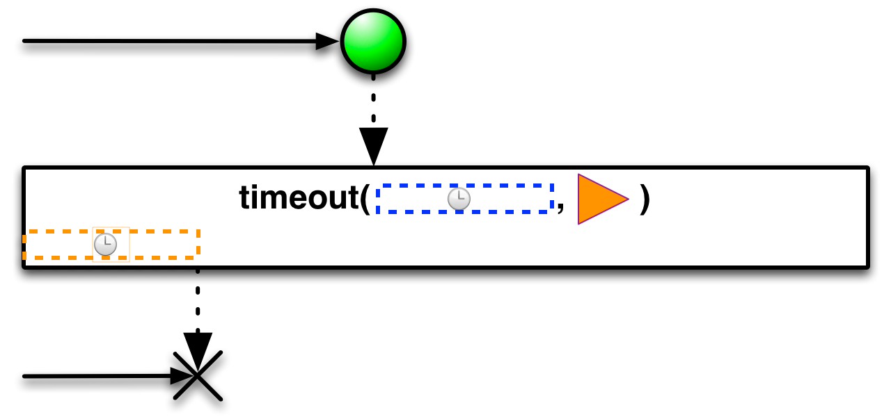转换成另外一个新的单源
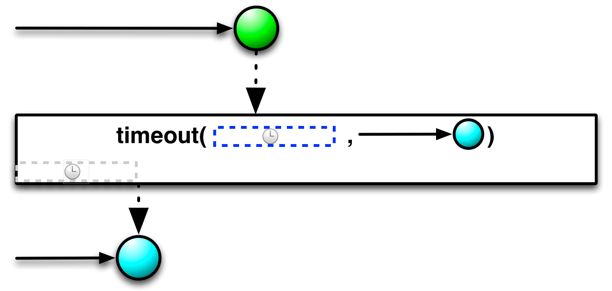新单源的Scheduler模式
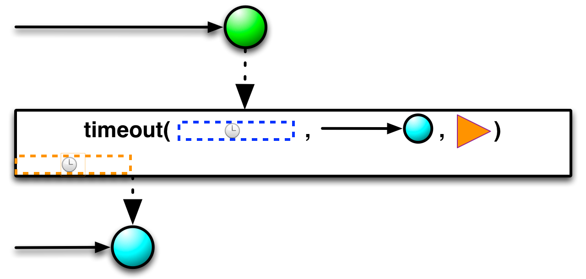17.总结
是的，Rxjava2不是本文的重点，但是如果您想要理解《平行世界》的内容，那么掌握ReactiveX中的Rxjava2中的知识只是一个基础，响应式编程是一种编程风格，它的特点是异步、并发、事件驱动、推送Push以及观察者模式的衍生【Reference】。这种编程风格允许开发人员构造事件驱动模型，可扩展性、弹性的反应系统：提供高度敏感的实时的用户体验感觉，可伸缩性和弹性的应用程序栈的支持，随时可以部署在多核和云计算架构。而Rxjava2就是响应式编程在Java语言中的一种实现，处置之外，如果读者对响应式编程比较感兴趣，可以去尝试其他不同语言的Reactive，这个再ReactiveX的官方站点都有相关介绍：http://reactivex.io/languages.html。